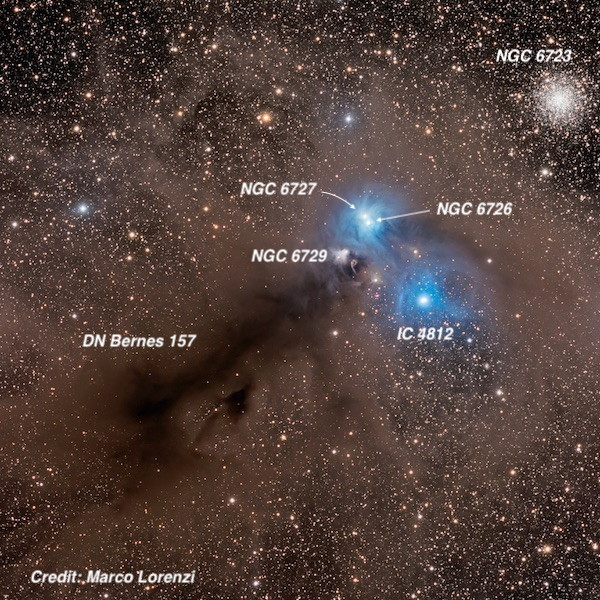
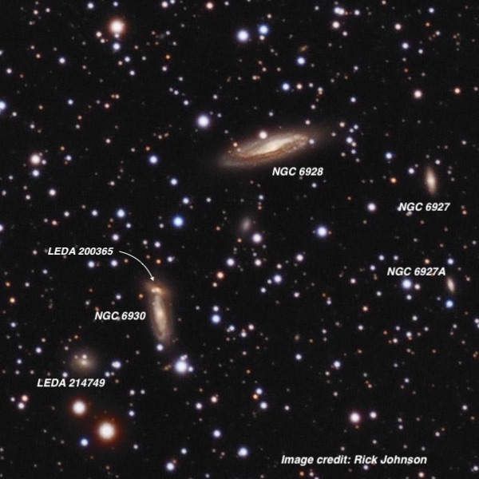
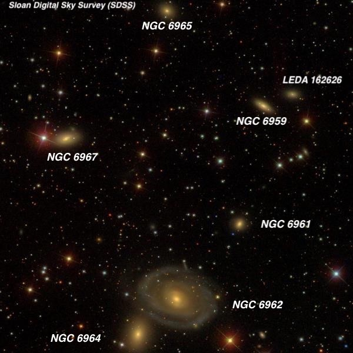
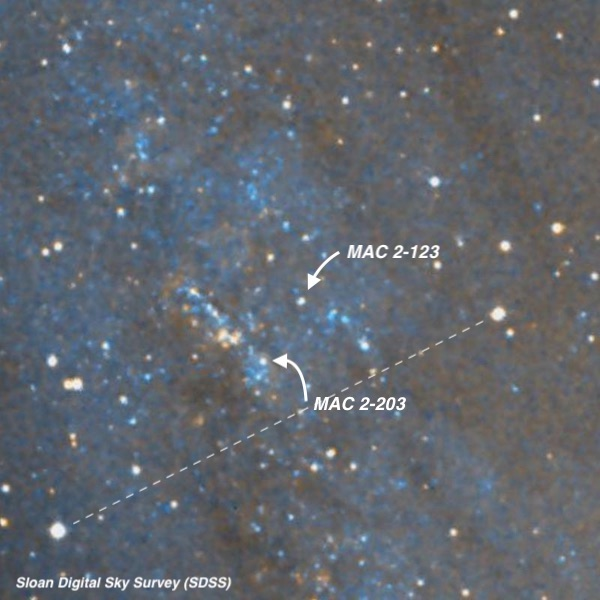
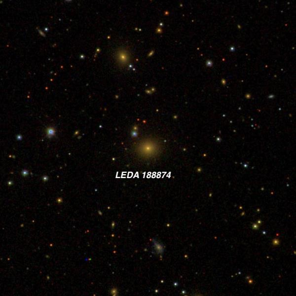
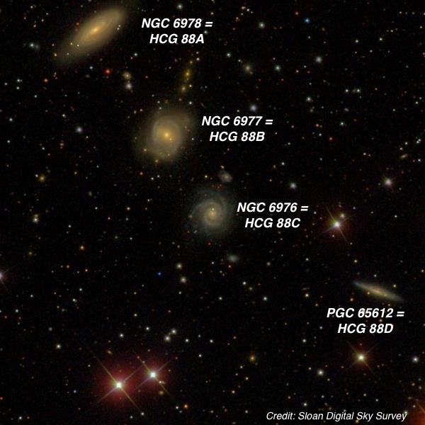
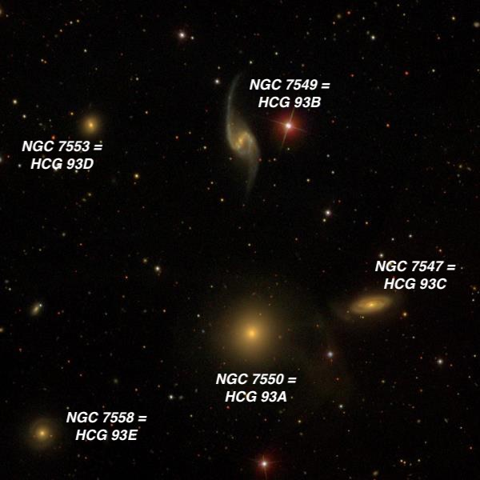
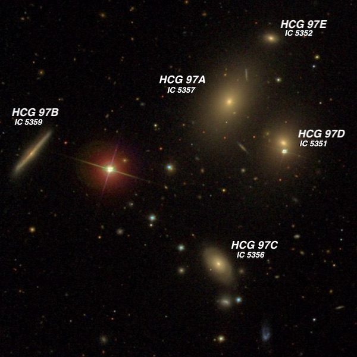

September 2019 Observing Report from CalStar
OR: September 2019 Observing Report from CalStar
This central California star party took place over 4 nights, September 25-28, at Lake San Antonio . Although the site is located in a dark blue light pollution zone transparency seemed a bit off from previous years (perhaps due to nearby developments). Still SQM readings were typically between 21.4-21.5, plenty dark to explore faint fuzzies with my 24-inch f/3.7 Starstructure. The skies were totally clear on the first and last nights, but on the other two a deep marine layer of clouds (3500’) pushed onshore over the coastal mountains and we were clouded out by midnight.My targets included a variety of solar system objects (such as Comet Africano C/2018 W2 and Neptune/Triton) and Milky Way highlights, but mostly focused on small galaxy groups that abound in the Fall skies. Most of the following descriptions were made at 322x or 375x, except for the first field, which required a low power.
Next year’s star party will take place on April 23-26th, though there is no sign-up required or star party fees (other than the LSA camping fee) and participants can arrive or leave outside these dates.
Steve Gottlieb

Early on the first evening of the star party I took a look at the remarkable field that includes the showpiece globular cluster NGC 6723 , south of the Teapot (Sagittarius). Even at a southerly declination of -36.6°, this 7th magnitude globular was well resolved. To the southeast (over the Corona Australis border) is a group of three bright reflection nebula - NGC 6726, 6727 and 6729. Of course, these objects are much more prominent — top showpieces, in fact — from the southern hemisphere. Nevertheless, they are well worth a look from the latitude of central California.
These bright reflection nebulae are only 30' from NGC 6723, yet for some reason they were missed by John Herschel during his southern survey from the Cape of Good Hope. A large aperture is certainly not necessary — the bright pair of NGC 6726/27 was discovered in October 1860 using only a 6.2-inch refractor at the Athens Observatory. NGC 6726/27 both surround bright stars separated by less than 1’ and each extend 1.5'-2.0' in diameter, merging into a figure 8 shape. NGC 6927 ’s central star is the variable TY CrA (mag 9-12).
NGC 6729, which fans out to the southeast of the erratic variable R CrA (T Tauri type with a range from mag 9.7-13.5), is a variable (reflection) nebula similar to the better known Hubble’s Variable Nebula in Monoceros. And further southeast is one of the best dark nebulae in the sky — Bernes 157. Using my 13mm Ethos, there wasn’t a single star visible in the field — an area as the full moon. Scanning even further southeast the sky was eerily vacant.
A number of highly obscured, young pre-main sequence stars (< 1 million years old) and Herbie-Haro (HH) objects have been discovered in this dust cloud in the infrared. A 1984 survey detected a cluster, dubbed “The Coronet”, which is so obscured by dust it is only visible in the infrared. There are roughly 55 known members including several brown dwarf candidates.

NGC 6928 (brightest in quintet) 20 32 50.4 +09 55 37; Delphinus V = 12.2; Size 2.0'x0.6'; Surf Br = 12.3; PA = 106°
NGC 6928 is the brightest member of a galaxy group in Delphinus at a distance of 150 to 200 million light years - not your usual go to location for galaxies. The brightest three galaxies form a nice trio in a rich star field including a mag 8.6 star 4’ SSW. NGC 6928 is visible in a 8” scope — my first observation was through a C-8 on Mt. Hamilton 36 years ago! A 10” scope will add NGC 6930 and a 12” will show NGC 6927. The group was photographed using the Mt. Wilson 60” before 1920 and NGC 6928 was described as a "left-handed spiral, two arms making about three-fourths of a turn each. Brightest in the middle where the two arms join with a slight offset, forming a bent line 35" long.”
Visually NGC 6928 appeared moderately bright, elongated 4:1 WNW-ESE, ~1.2’x0.3’ with a noticeably brighter core. A mag 13.5 star hugs the north edge near the center. Perhaps the most interesting target, though, is NGC 6930. It was moderately faint, very thin edge-on, ~50”x10” with a slightly brighter core. A mag 15.5 star is barely off the south tip. Right at the north tip is LEDA 200365 , an extremely faint and tiny galaxy. I previously had detected it (barely) through my 18”. LEDA 214749 , another dim galaxy, is 1.7’ southeast.

This is the 5th time I’ve observed the NGC 6962 group (WBL 666) — the first look was in 1984 using a 13.1-inch Coulter Odyssey I. The group also includes NGC 6959 , -61, -64, -65 and -67. There’s been a great deal of confusion regarding the identifications, resulting in conflicting names, specifically regarding NGC 6959, -61, -63 and -67. And the galaxy labeled as NGC 6965 is also known as IC 5058 . William Herschel discovered the two brightest members, NGC 6962 and 6964 in 1785. The other four galaxies were discovered through Lord Rosse’s 72-inch in 1857 and 1876. The group lies at a distance of ~180 million light years
The bright spiral NGC 6962 is interesting -- I initially noticed only the central region at 375x, calling it "moderately large, slightly elongated ~E-W, sharply concentrated with a very bright core, ~40" diameter, with an intense nucleus.” But lowering the power to 200x, I noticed a very large, low surface brightness halo, extending ~2.5’ diameter with a mag 14.5 is at the west edge (1.4' from center) and a similar star 1.7' east of center. Two known supernovae have popped off in NGC 6962 — SN 2002ha (type Ia), which reached mag 14.6, and 2003dt (type Ia). The progenitor star in both cases was a white dwarf in a binary system.
Spindle-shaped NGC 6959 was easily visible extending ~0.7’x0.3’ with a slightly brighter core. It has a close companion — LEDA 162626 — just 1.1’ to its northwest. The companion was a tough low surface brightness patch that only occasionally popped, but its redshift (z = .013) matches the other members of the group.

MAC 2-123 and MAC 2-203 are a pair of type A2 Ia and A3 Ia supergiants within M31. At mag 16.3 they are possibly the brightest individual stars in M31 in the V band! Various papers report V magnitudes between 16.2 and 16.5. The two stars are separated by only 52”, so they essentially form a wide pair within an OB association (A48). At 375x, the stars were noticed almost immediately near the edge of visibility using a Megastar chart.
Once I knew their exact location just north of a line (see photo) connecting two mag 12.3 and 13.1 stars separated by 5.8' NW-SE, I could barely hold the stars continuously using careful averted vision. I believe MAC 2-123 was slightly easier to see. Of course, visually, they’re nothing more than dim specks, but knowing their distance is 2.5 million light years — well, that’s pretty amazing!
The two stars are included in the 1994 paper " Spectroscopic observations of AB-supergiants in M31 and M33 " and the 1988 paper " A catalogue of the brightest stars in the field of M31 ".

This boring looking elliptical was targeted due to its confirmed redshift of z = .1375, which implies a light-travel time of 1.75 billion years! At 375x it was just an extremely faint and small smudge that only occasionally popped. The exact position was aided by a mag 15.7 stellar “signpost” only 20” NE (the faint blue star on this SDSS image). It was too faint to really estimate a size, but seemed nearly stellar.
This galaxy can be found 1° northwest of M2 and 7' SW of mag 9.2 HD 204738 . Redshift surveys have determined LEDA 188874 is the cD (central dominant) galaxy in a distant galaxy cluster, identified as WHL J213027.0-000024. NED lists a total of 43 galaxies within 10’ that have similar redshifts, though CGCG 375-048 , a much brighter galaxy 8’ E, is in the foreground (z = .03).
Hickson Compact Groups are scattered across the Fall skies and I looked at HCG 86 , 87, 88, 89, 93 and 97. Here are three of these groups.

HCG 88 consists of a nearly linear quartet of spirals in Aquarius, about 4° north of 3.8-magnitude Epsilon Aquarii. The group lies at a distance of 260-270 million light years and includes two additional fainter members (one is a very dim galaxy to the lower right of NGC 6976 ) that didn’t make Hickson’s magnitude cut-off, so it’s really a sextet. Three are relatively easy NGCs in a straight line — NGC 6978, 6977, 6976 — along with one very tough spiral, HCG 88D , to their southwest.
Based on this SDSS image the spirals look unperturbed and quite regular in structure. But deeper images shows that HCG 88A (NGC 6978) has a faint plume to the northwest. There is no similar extension on the southeast end of the galaxy, suggesting it’s the remnant of a tidal tail seen in interacting galaxies. Also HCG 88B shows a shift in orientation from N-S in the SDSS image to more NW-SE on deeper images, indicating a possible shell-like outer structure to this galaxy - also evidence of a past interaction (2015 paper by Brosch: "Galaxy interactions in the Hickson Compact Group 88”).
HCG 88A was moderately bright and large, very elongated 3:1 NW-SE, ~1.1’x0.35’. It was brighter along the central axis and contained a small bright core. A mag 14.8 star lies 1.3' SSW, halfway to NGC 6977 = HCG 88B. 88B was just slightly fainter (still moderately bright), round, 50” across and also showing a brighter core. The halo had a slightly uneven surface brightness like a face-on spiral often shows. NGC 6976 = HCG 88C was fairly faint, round, just 24" diameter, with a fairly low surface brightness and slightly brighter core. Finally, HCG 88D was easily the faintest of the quartet. I’ve glimpsed it in my old 18”, but it was barely a threshold observation. Even in the 24-inch it was just an extremely faint (V = 14.9, B = 15.8), elongated smudge, visible intermittently.

NGC 7550 = HCG 93A (brightest member of HCG 93 ) 23 15 16.0 +18 57 42; Pegasus V = 12.2; Size 1.4'x1.2'; Surf Br = 12.6; PA = 171°
Hickson 93 lies within the Great Square of Pegasus on the southwest side, about 4.5° NE of 2.5-magnitude Alpha Pegasi (Markab). Although there are five apparent members, the faintest member HCG 93E lies far in the background based on its 75% higher redshift. The brightest three members — NGC 7547 , 7549 and 7550 — are also known as Arp 99 . Halton Arp placed the trio in his category of "spiral galaxies with E galaxy companions on arms”. The spiral is obviously NGC 7549 with its long distorted arms, but despite Arp’s classification neither of its neighbors are connected to the arms of NGC 7549. In fact the main visible signs of interaction is directly between NGC 7547 and 7550 are streams of gas and dust pulled out of NGC 7547 and particularly NGC 7550. However, HCG 93B displays bright H-alpha regions on the tips of the bar and on the inner region of the western spiral arm, further evidence of the interaction.
I caught just a hint of these spiral arms as brighter arcs on the outside of the central region, but nothing of the thin stretched extensions. I’ve looked at HCG 93 a total of 7 times since 1989, mostly through my old 18-inch, and it’s one of the easier (relatively) quintets. Surprisingly, William Herschel only found the single galaxy NGC 7550, which has the highest surface brightness. I logged the central region as "strongly concentrated with a very bright, prominent core that increased to a sharp stellar nucleus.” John Herschel added its companion NGC 7547, but the other three galaxies were discovered through Lord Rosse’s 72-inch in Ireland and William Lassell’s 48-inch equatorial reflector (both speculum mirrors) on the island of Malta.

Finally, HCG 97 is another compact group — all of the members with IC designations — and a range of V magnitudes from 13.0 to 15.6. The entire quintet was discovered by E.E. Barnard on 28 October 1889, while he was observing Brooks Comet (1889V) through the 36-inch Clark refractor at Lick Observatory. The group includes two ellipticals, two spirals and a faint lenticular (97E). X-ray maps of the region exhibit strikingly elongated contours extending from NW to SE, which is roughly the same orientation the 5 galaxies are scattered. That suggests the group would display significant signs of interactions such as shells, tails, bridges or diffuse light, but there’s no obvious signatures of an ongoing interaction.
I previously had observed the brightest 4 galaxies through my 18”, but this was my first successful sighting of HCG 97E (V = 15.6, B = 16.6). It was just a very small, round knot, probably 10"-12” diameter and required averted vision. Surprisingly HCG 97B is the second most challenging member. This edge-on streak extends ~6:1 NW-SE, ~50"x8", with a low even surface brightness and no central brightening. A mag 10.4 star sits 1.5’ WSW.
One of the criteria to qualify as a compact group is isolation — the nearest non-member is supposed to be at least at least three times further separated than the radius of the group. In the case of the HCG 97 there are a pair of galaxies — MCG -01-60-040 and -041 that are about 10’ SE — just beyond that limit, which are also members of the group (same redshift of z = .021). In addition MCG -01-60-043 is just over 20’ to the east of the group. In fact, I ran into MCG -01-60-041 25 years ago with my 18”, while searching for HCG 97. So, the quintet is really the compact core of a larger, scattered group of galaxies.